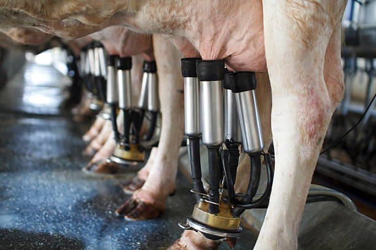

Durante a ordenha, a vaca desempenha um papel crucial na produção e extração do leite. O processo começa com a produção de leite nas glândulas mamárias, onde os alvéolos secretam o leite, influenciados por fatores como nutrição, manejo, genética e saúde. Quando a vaca é preparada para a ordenha, o estímulo do toque nas tetas ou a presença do bezerro provoca a liberação do hormônio ocitocina, que permite que o leite desça dos alvéolos para os canais mamários.
Para que a ordenha seja eficiente, a vaca deve estar relaxada e confortável, pois o estresse pode inibir o reflexo de descida do leite, reduzindo a produção. A saúde da vaca é fundamental para garantir a qualidade do leite, já que doenças como a mastite podem comprometer tanto a qualidade quanto a quantidade de leite. Além disso, a vaca deve estar bem adaptada ao uso do equipamento de ordenha, que precisa ser ajustado corretamente para evitar desconforto e garantir uma extração eficiente do leite.
Em resumo, o bem-estar, a saúde e a adaptação da vaca ao processo de ordenha são essenciais para uma produção de leite de alta qualidade.


.png)
.png)